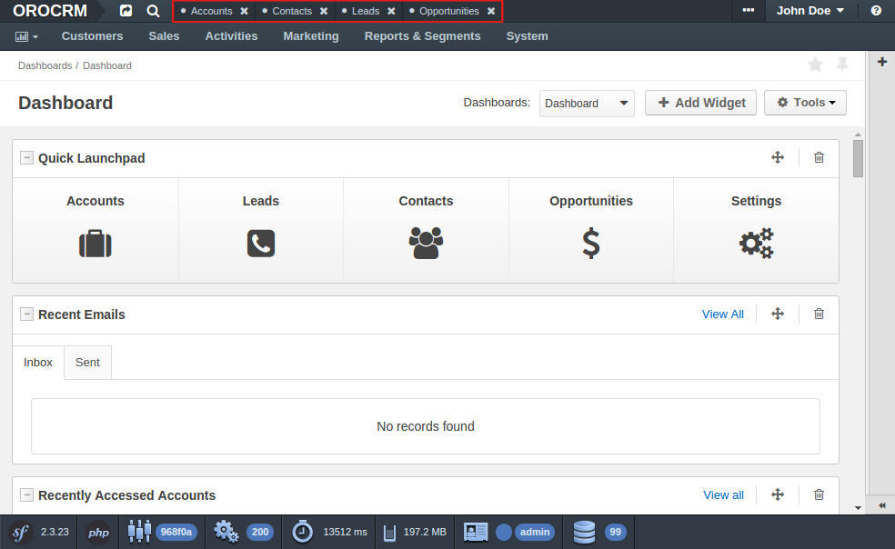

How to Create a Global JavaScript Component¶
A global component or global view is an instance that exists beyond the content area and is not re-created in the course of navigation between different pages. A good example of a global component is the Pin Bar:
See also
You can find more information about global components and global views and learn about the App Module from the Frontend Architecture chapter and from the Page Component documentation.
Creating the Page Component Module¶
First of all, you need to define the Page Component module in your bundle, which has to extend the
BaseComponent class from the OroUIBundle. If the Page Component module is named
MyComponent, its code has to be placed in a file named my-component.js that lives in the
Resources/public/js/app/components directory of your bundle:
1 2 3 4 5 6 7 8 9 10 11 12 13 14 15 | // src/Acme/DemoBundle/Resources/public/js/app/components/my-component.js
define(function (require) {
'use strict';
var MyComponent,
BaseComponent = require('oroui/js/app/components/base/component');
MyComponent = BaseComponent.extend({
initialize: function (options) {
console.log('MyComponent is initialized', options);
}
});
return MyComponent;
});
|
You can implement all the desired functionality inside the component.
The component performs the role of a controller. It is responsible for the following things:
- create necessary views, collections, models and even sub-components
- handle environment events
- dispose obsolete internal instances
Creating an App Module¶
To boot your component together with the application, you need to create an App Module:
1 2 3 4 5 6 7 8 9 10 11 12 13 14 15 16 | // src/Acme/DemoBundle/Resources/public/js/app/modules/my-module.js
require([
'oroui/js/app/controllers/base/controller'
], function (BaseController) {
'use strict';
BaseController.loadBeforeAction([
'acmedemo/js/app/components/my-component'
], function (MyComponent) {
/* add composition to reuse between controller actions */
BaseController.addToReuse('myComponent', MyComponent, {
/* define options for your component here, like: */
keepServerConnection: true
});
});
});
|
The example above advises the controller to load your Page Component before the first action and will re-use its composition between actions. The following three arguments define the composition:
- the name of the composition
- the constructor
- options of the constructor
See also
You can find more information about compositions in the Chaplin.Composer documentation.
Declaring the App Module¶
The final step is to register your App Module in the RequireJS config:
1 2 3 4 5 6 | # src/Acme/DemoBundle/Resources/config/requirejs.yml
config:
paths:
'acmedemo/js/app/modules/my-module': 'bundles/acmedemo/js/app/modules/my-module.js'
appmodules:
- acmedemo/js/app/modules/my-module
|
First, the my-module module name is added to the config.paths section to let the building
script know about its location. This way, the building script can trace the dependency and add it
to the build-file (oro.min.js). Once the source file was added to the configuration,
my-module is added to the list of modules that are invoked at the application start using the
appmodules key.
Note
To see your component in action you need to do a few more things:
Clear the Symfony application cache to update the cache and the included RequireJS config:
1
$ php app/console cache:clear
Reinstall your assets if you don’t deploy them via symlinks:
1
$ php app/console oro:assets:install
In production mode, you also have to rebuild the JavaScript code:
1
$ php app/console oro:requirejs:build